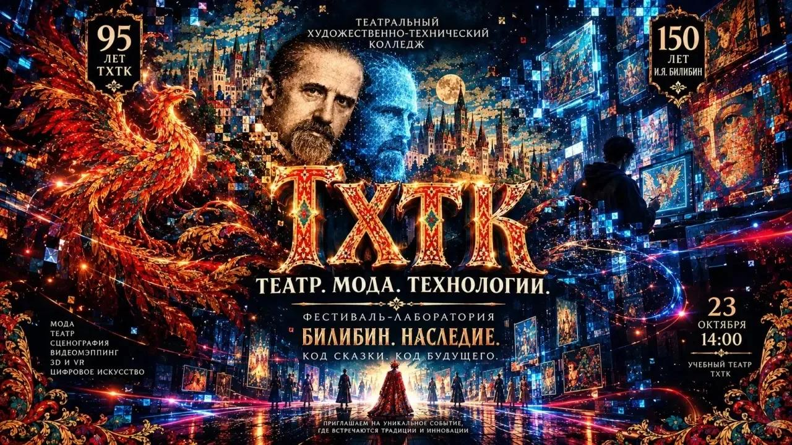
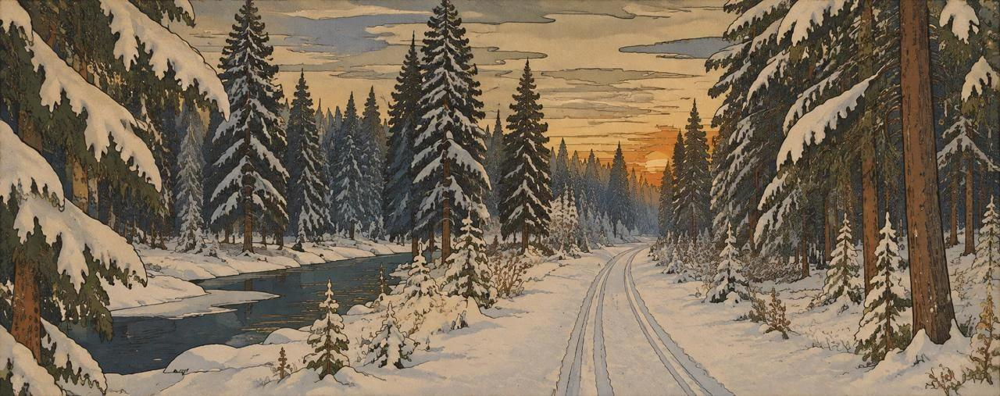

Театр. Мода. Технологии. Фестиваль-лаборатория «Билибин. Наследие.»

- Когда
- 23 октября 2026, 14:00
- Где
- Учебный театр ТХТК, Москва, 1-й Амбулаторный проезд, 8, стр. 2
- Как попасть
- Вход строго по приглашениям
Фестиваль, где сказка встречается с кодом
Каждый сезон «Театр. Мода. Технологии.» выбирает одну культурную тему и превращает её в иммерсивное шоу-спектакль. В 2026 году тема - наследие Ивана Билибина: 150 лет со дня его рождения и 95 лет Театральному художественно-техническому колледжу.
На одной сцене собраны восемь коллекций молодых дизайнеров, цифровые аватары, нейросетевые анимации и видеомэппинг. Орнаменты Билибина оживают на стенах и «перетекают» на костюмы.
Это не конкурс. Дизайнеры приглашены заранее, а техническую часть шоу делают студенты колледжа: аниматоры, звукорежиссёры, видеоинженеры, осветители и гримёры.
- Физическая коллекцияКостюмы по мотивам билибинских иллюстраций в современном прочтении.
- Цифровая коллекция3D-аватары и анимированные образы, которые входят в сцену через мэппинг и LED-экраны.
- Сценография будущегоЭскизы и макеты студентов к воображаемому спектаклю по сказкам Билибина.
Программа вечера
Весь показ идёт как одно действие, без пауз между блоками. Около часа.
-
2-3 мин
Пролог
Темнота, затем свет. Билибинские орнаменты на заднике начинают двигаться, будто их рисует невидимая рука. Голос за кадром открывает сезон.
-
Первый блок
Явь
Выход героев в физических костюмах. Для каждой коллекции мэппинг создаёт свою среду: болотные огни, всполохи пламени, терем.
-
Второй блок
Навь
Переход в цифровое пространство. Коллекции показаны на LED-экранах и через мэппинг, под экспериментальную электронную музыку.
-
Кульминация
Синтез
Модели в костюмах взаимодействуют с проекциями и AR-объектами. Орнаменты «перетекают» с экрана на ткань.
-
5-7 мин
Финал
Общий выход дизайнеров и моделей, финальный мэппинг и поздравление колледжа с юбилеем.
Явь. Физические коллекции
Четыре коллекции, которые выходят на сцену в живых костюмах.
-
Фото скоро
«Царевна»
-
Фото скоро
«Душа моя»
-
Фото скоро
«Бабушкины сказки»
-
Фото скоро
«Додон»
Пространство как продолжение тела
Видеомэппинг здесь не фон для костюма. Он продолжает костюм: модель - это орнамент, который сошёл со стены и пошёл. Или наоборот, стена - ткань, которая ещё не стала платьем.
Над цифровыми декорациями работают студенты колледжа, а для коллекции «Царевна» мэппинг строится как четыре состояния: тишина каньона, охристое открытие, бирюзовая кульминация и финал в жидком серебре.

Репетиции
Фотографии и видео с репетиций появятся здесь после прогонов в театре.
- Фото репетиции
- Фото репетиции
- Фото репетиции
- Видео репетиции
Кто делает шоу
Команда колледжа: студенты-аниматоры, звукорежиссёры, монтажёры, гримёры, осветители и видеоинженеры работают под руководством наставников и приглашённых экспертов.
Партнёры сезона
Мы открыты к информационным, индустриальным и технологическим партнёрам: модельным агентствам, театрам, музеям, компаниям из сферы 3D, AR/VR, проекционного и светового оборудования.
Логотип партнёраЛоготип партнёраЛоготип партнёра
23 октября в 14:00, учебный театр ТХТК
Вход строго по приглашениям.
Москва, 1-й Амбулаторный проезд, д. 8, стр. 2Метро «Аэропорт» Открыть на карте
Связаться с продюсером
Хотите показать коллекцию в следующем сезоне? Напишите продюсеру.